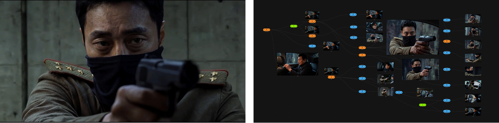

(자료 제공: 밤부네트워크)
“콘텐츠 산업은 결국 확률의 게임이다. 숏드라마는 이용자 데이터를 통해 IP의 성공 가능성을 가장 빠르게 검증할 수 있는 포맷이며, 이를 기반으로 롱폼 드라마, 애니메이션, 게임 등 다양한 산업으로 IP를 확장할 수 있다. 또한 음원처럼 지속적인 정산 구조를 만들 수 있다는 점에서 새로운 IP 비즈니스 모델이 되고 있다.”
Q. 2017년 유튜브 채널 <대나무숲 TV>에서 웹드라마부터 시작한 것으로 알고 있다. 어떤 계기로 지금의 밤부네트워크를 설립하게 되었는가?
(정) 대학교 3학년 때, <대학생 창작 연합 동아리>를 했었다. 지금은 블라인드나 에브리타임을 많이 쓰지만, 그 당시에는 ‘땡땡 대학교 대나무 숲’이라는 페이스북 기반의 커뮤니티가 엄청 활발했다. 거기에 올라오는 사연들도 ‘대숲 문학’이라고 해서 대학교마다 유명한 레전드 사연들이 있었다. 그때 저희가 해당 커뮤니티 개발자에게 제안해서, 사연을 올릴 때 영상화 동의 여부를 선택할 수 있는 기능을 추가해달라고 부탁드렸다. 그렇게 영상화에 동의한 사연은 바로 콘텐츠로 제작했고, 그렇지 않은 경우에는 작성자에게 직접 연락해 허락을 받은 뒤 영상을 만들었다. 그렇게 대학생 창작 연합 동아리 형태로 활동을 시작했다.
그러다가 2016년 CJ E&M DIA TV와 한국콘텐츠진흥원이 함께 진행한 ‘제1회 디지털 크리에이터 & PD 공모전’에 참가하게 됐다. 당시 제가 제안했던 기획은 ‘서울·경기 지역에서 어느 대학교가 가장 영상을 잘 만드는가’를 겨루는 서바이벌 형식의 콘텐츠였다. 같은 주제와 같은 배우, 동일한 제작 시간 안에서 각 대학이 영상을 제작하고 조회 수와 시청자 반응으로 경쟁하는 방식이었다. 당시 서울·경기 지역의 영상학과와 영상 동아리 등 70여 개 대학에 직접 메일을 보내 참가팀을 모집했고, 그중 최종 선발된 4개 대학이 본편 프로그램에 참여했다. 그 과정에서 좋은 성과를 거둔 친구들과 지금의 밤부네트워크를 함께 창업하게 됐다. 그 시기 20대에게는 '대학교 대나무숲', 30대에게는 '직장인 대나무숲'이 가장 활발한 익명 커뮤니티였다. 세대를 아우르는 공감 콘텐츠를 만들고 싶다는 생각에서 회사 이름도 '밤부네트워크(BambooNetwork)'로 짓게 됐다.
Q. 밤부네트워크의 사업 구조는 어떻게 되는가?
(정) 숏폼 같은 경우는 현재 국내외 주요 숏드라마 플랫폼 대부분과 협업하고 있다. 처음에 크래프톤 자회사였던 띵스플로우가 출시한 스토리릴스에 <해야만 하는 셰어하우스>를 인터랙티브 콘텐츠 게임 형태로 제작했는데, 이후 비글루와 드라마박스에서도 좋은 성과를 거뒀다. 특히 이 작품은 밤부뿐 아니라 한국 숏드라마 산업에도 의미 있는 작품이었다. 릴숏(ReelShort), 드라마박스(DramaBox) 등 글로벌 플랫폼 관계자들이 직접 한국을 방문해 밤부와 미팅을 진행했고, 이를 계기로 글로벌 플랫폼들이 한국 시장을 본격적으로 검토하기 시작했다. 저희에게도 글로벌 시장으로 확장하는 신호탄이 된 프로젝트였다.
지금 가장 공을 들이고 있는 분야는 AI 애니메이션이다. 단순히 제작비를 절감하기 위해서가 아니다. 웹툰과 웹소설처럼 방대한 원천 IP를 가장 빠르게 영상화하고, 글로벌 시장에서 이용자 반응을 검증할 수 있는 가장 효율적인 포맷이라고 생각하기 때문이다.
기존 실사 숏드라마는 배우의 초상권 등 여러 제약이 있어 캐릭터를 활용한 굿즈나 라이선싱 사업으로 확장하는 데 한계가 있다. 반면 AI 애니메이션은 캐릭터 자체를 IP 자산으로 활용할 수 있기 때문에 영상을 넘어 굿즈, 게임, 라이선싱 등 다양한 사업으로 확장하기에 훨씬 유리하다.
Q. 밤부네트워크의 비즈니스 모델은?
(정) 롱폼이든 숏폼이든 콘텐츠 산업은 결국 확률 게임이라고 생각한다. 밤부는 그 확률을 감이 아니라 데이터로 바꾸는 회사가 되고자 한다. 기존 콘텐츠 산업은 10편을 만들어 한두 편의 흥행작으로 전체를 회수하는 구조다. 하지만 아무리 뛰어난 제작사라도 연속해서 성공하기 어려운 이유는 이용자 데이터를 충분히 확보하기 어렵기 때문이다.
반면 숏드라마는 이용자 데이터를 직접 확인할 수 있다. 어느 회차에서 시청자가 이탈하는지, 어떤 장면에서 결제하는지까지 분석할 수 있기 때문에 감이 아니라 데이터에 기반해 스토리를 설계할 수 있다. 그래서 숏드라마는 단순히 짧은 드라마가 아니라, IP의 성공 가능성을 가장 빠르게 검증할 수 있는 포맷이라고 생각한다. 현재도 대형 IP의 스핀오프 프로젝트를 진행하고 있으며, 자체적으로도 롱폼 드라마와 웹툰 IP를 숏드라마를 통해 사전 검증하는 시도를 하고 있다.
결국 콘텐츠 기업은 제작만으로 지속적으로 성장하기 어렵다. 또 하나의 구조적인 문제는 플랫폼 중심의 수익 배분 구조다. 대부분의 제작사는 편성이 되지 않으면 매출도 발생하지 않는다. 반면 숏드라마는 음원 산업처럼 이용량에 따라 지속적으로 정산을 받을 수 있는 구조를 만들 수 있다는 점에 주목했다. 제작비를 한 번 받고 끝나는 것이 아니라, 하나의 IP가 오랫동안 수익을 만들어내는 구조라는 점에서 새로운 비즈니스 모델이 될 수 있다고 본다. 결국 중요한 것은 제작 마진이 아니라 IP에서 발생하는 지속적인 정산 수익이다.
앞으로는 여기에 더욱 집중할 계획이다. AI를 활용해 자체 IP를 직접 제작하고 글로벌 시장에서 가장 빠르게 검증한 뒤, 성과가 입증된 IP를 실사 드라마, 애니메이션, 게임, 라이선싱 등 다양한 산업으로 확장하는 구조를 만들고자 한다. 단순히 제작을 많이 하는 회사가 아니라, 좋은 IP를 가장 빠르게 검증하고 직접 보유해 그 가치를 지속적으로 확장하는 것이 밤부의 궁극적인 목표다.
“기존 플랫폼에서의 제한된 수익 구조를 극복하기 위해 직접 결제 기반의 숏드라마 시장을 선택했다. 지금의 성과 연동형 계약을 넘어 향후에는 100% 자체 자산화 IP를 구축함으로써 이종 산업으로 무한 확장하는 3세대 엔터테크 기업을 지향하고 있다”
Q. 현재 밤부네트워크가 지향하는 사업 방향은 무엇인가?
(정) 지금의 밤부네트워크를 한마디로 표현하면 AI를 활용해 IP를 만들고 확장하는 엔터테크 기업이다. 스스로를 드라마 제작사가 아니라 IP를 만들고 키우는 회사라고 정의하고 있다. 1세대 방송사, 2세대 제작 스튜디오를 넘어 AI를 핵심 경쟁력으로 IP를 가장 빠르게 검증하고 확장하는 3세대 콘텐츠 기업을 목표로 하고 있다.
숏드라마는 그 출발점이다. 숏드라마를 통해 IP의 가능성을 빠르게 검증하고, 성과가 입증되면 롱폼 드라마는 물론 애니메이션, 게임, K-POP, 라이선싱 등 다양한 산업으로 확장하는 것이 핵심 전략이다. 결국 하나의 콘텐츠를 만드는 것이 아니라 오랫동안 다양한 산업으로 확장될 수 있는 IP를 만드는 것이 목표다.
플랫폼은 계속 바뀌지만 좋은 IP의 가치는 남는다. 기존 롱폼 드라마는 하나를 제작하는 데 오랜 시간과 많은 비용이 필요했지만, AI와 결합하면 훨씬 빠른 속도로 IP를 검증하고 다양한 시도를 할 수 있다. AI의 본질은 제작비 절감이 아니라 IP를 더 빠르게 검증하고 확장할 수 있다는 데 있다고 생각한다. 결국 좋은 IP를 가장 빠르게 검증하고, 가장 크게 확장하는 것이 현재 밤부네트워크가 지향하는 사업 방향이다.
Q. 단순 숏드라마 제작을 넘어 IP 확장의 방향으로 전환하게 된 계기가 있는가?
(정) 흔히 피벗(Pivot)이라고 표현하는데, 밤부는 웹드라마로 시작해 유튜브 시대에는 오리지널 콘텐츠와 브랜디드 콘텐츠를 제작했고, OTT 시장이 성장하면서는 OTT 콘텐츠도 제작했다. 하지만 사업을 운영하면서 플랫폼은 계속 바뀌어도 고민은 늘 같았다.
유튜브에서는 콘텐츠가 아무리 많은 조회 수를 기록해도 그 트래픽이 기업의 수익으로 충분히 연결되지 않았다. 콘텐츠는 소비됐지만 콘텐츠 트래픽이 머니타이제이션(Monetization)이 되지 않았던 것이다. 즉, 조회수는 계속 쌓였지만 회사의 자산은 쌓이지 않았다. 콘텐츠가 소비되는 것과 기업의 가치가 커지는 것은 전혀 다른 문제였다.
OTT는 제작비를 받을 수는 있었지만 대부분의 권리를 플랫폼이 보유하는 구조였다. 결국 콘텐츠를 많이 만들어도 IP가 회사의 자산으로 남기는 어려웠다. 그래서 새로운 수익 구조를 고민하던 과정에서 숏드라마 시장에 주목하게 됐다.
숏드라마는 기본적으로 이용자가 직접 결제하는 모델이다. 음원 산업처럼 콘텐츠가 소비되는 만큼 지속적으로 정산을 받을 수 있는 구조라는 점이 가장 매력적이었다. 단순히 제작비를 받고 끝나는 것이 아니라 하나의 IP가 오랫동안 수익을 만들어낼 수 있는 구조라고 판단했다.
그래서 국내 숏드라마 시장이 본격적으로 열리기 전부터 가능성을 보고 가장 먼저 움직였다. 국내 주요 숏드라마 플랫폼들의 경영진을 직접 설득해 초기 론칭 파트너로 함께했고, 시장 초기 생태계를 함께 만들어 왔다.
Q. 밤부네트워크에서 숏폼 콘텐츠를 기획, 제작할 때, 플랫폼별로 차별화를 염두에 두고 하는가?
(정) 당연히 플랫폼별 특성을 고려해 기획한다. 플랫폼마다 주요 시청자의 연령대와 취향, 선호 장르, 결제 방식이 모두 다르기 때문이다. 어떤 플랫폼은 초반의 강한 훅이 중요하고, 어떤 플랫폼은 감정선을 깊게 쌓는 작품이나 특정 장르에 대한 선호가 뚜렷하다. 아무리 완성도가 높은 작품이라도 해당 플랫폼 이용자들이 선호하지 않는 장르라면 좋은 성과를 기대하기 어렵다.
따라서 같은 IP라도 공개되는 플랫폼에 따라 톤과 각색 방향, 회차별 길이, 섬네일, 초반 전개와 결제 구간까지 다르게 설계한다. 내부에 축적된 시청 및 결제 데이터를 바탕으로 어떤 설정과 장면에서 반응이 높았는지 분석하고, 이를 기획 단계부터 반영하고 있다. 결국 IP는 같더라도 플랫폼의 이용 방식과 시청 문법에 따라 콘텐츠의 설계는 달라져야 한다고 생각한다.
Q. 여러 플랫폼과 협업하면서 가장 어려운 점은 무엇인가?
(정) 제작 자체보다 가장 어려운 부분은 정산의 투명성이다. 사실 이 문제는 숏드라마만의 문제가 아니다. 기존 방송이나 OTT, 해외 배급 시장에서도 제작사는 플랫폼이나 배급사가 제공하는 정산 자료를 기준으로 수익을 확인하는 구조가 일반적이었다.
숏드라마 역시 플랫폼마다 제공하는 데이터와 정산 기준이 다르기 때문에 제작사 입장에서는 보다 다양한 데이터가 공유되면 산업 전체가 함께 성장하는 데 도움이 될 것이라고 생각한다.
다행히 최근에는 단순 제작비 계약을 넘어 RS(Revenue Share)나 GR(Gross Revenue Share) 형태의 계약도 점차 확대되고 있다. 이를 통해 작품 성과에 따른 추가 수익을 확보하고, 일부 프로젝트에서는 IP를 공동 소유하거나, 함께 사업화할 수 있는 권리도 확보하고 있다.
다만 궁극적으로는 자체 IP를 직접 제작하고 글로벌 플랫폼에 유통하는 비중을 더욱 확대하려고 한다. 직접 투자하고 유통하는 구조를 갖추면 IP의 가치와 수익 구조를 장기적으로 직접 관리할 수 있기 때문이다. AI를 적극 활용하는 이유도 단순히 제작비를 절감하기 위해서가 아니라, 이러한 사업 구조를 현실화하기 위해서다.
“AI 기술을 단순한 비용 절감 도구가 아니라 IP의 흥행 확률을 높이고 매몰비용을 줄이는 ‘실험과 검증의 표준 인프라’라고 할 수 있다. 즉, AI는 이제 선택이 아니라 표준이다.”
Q. 이제는 방송영상 사업자들도 AI 기술을 적극 활용하고 있다. 이러한 AI 기술이 콘텐츠 산업에 어떤 방식으로 영향을 미칠 것으로 보는가?
(정) 많은 사람들이 AI가 콘텐츠 산업의 위기가 될 것이라고 이야기하지만, 저는 반은 맞고 반은 틀리다고 생각한다. AI 자체가 경쟁력이 되지는 않는다. 아무리 좋은 AI를 가지고 있어도 연출과 스토리텔링에 대한 이해가 없으면 AI로 좋은 콘텐츠는 나올 수 없다. 결국 소비자(User)는 사람이 만들었는지 AI가 만들었는지를 보는 것이 아니라, 재미있는 콘텐츠라면 기꺼이 비용을 지불한다. 그래서 앞으로도 가장 중요한 경쟁력은 IP와 스토리텔링이라고 생각한다.
그럼에도 AI는 콘텐츠 산업의 판을 크게 바꿀 것이다. 많은 사람들이 AI를 제작비 절감 관점에서 바라보지만, 저는 IP를 실험하는 비용을 획기적으로 낮춰주는 기술이라고 생각한다. 같은 비용으로 더 많은 아이디어를 더 빠르게 검증할 수 있고, 결국 성공 확률도 높아진다. 그게 AI의 가장 큰 가치다.
실제로도 밤부는 하나의 결과물을 만들기 위해 여러 AI 모델을 조합해 활용하고 있으며, 자체적으로 개발한 AI 제작 파이프라인을 통해 이를 효율적으로 운영하고 있다.
Q. 구체적으로 숏드라마 제작에 AI 기술을 어떤 방식으로 이용하고 있는가?
(정) 현재 AI는 제작 전 과정에 활용하고 있다. 피지컬 프로덕션의 경우 대표적으로 후반 VFX 작업에 주로 사용한다. 재벌가 이야기에 필요한 고급 차량이나 대규모 공간을 구현하거나, 재촬영이 필요한 장면을 AI로 보완하는 등 제작 효율을 높이는 데 적극 활용하고 있다. 특히 액션이나 추격 장면처럼 비용이 많이 드는 촬영에서는 AI의 효과가 더욱 크다. 기존 피지컬 프로덕션에서는 구현하기 어려운 카메라 앵글이나 연출도 AI를 통해 구현할 수 있다.
다만 AI는 어디까지나 도구일 뿐이다. 결국 콘텐츠의 성패를 결정하는 것은 스토리텔링이라고 생각한다. 실제로 올해 2월 Higgsfield AI Action Contest에서는 스토리텔링을 중심으로 제작한 단편 영화 <Real Action>이 전 세계 약 8,800여 편의 출품작 가운데 최종 20개 수상작에 선정됐다. 이 경험을 통해서도 기술보다 결국 중요한 것은 이야기라는 점을 다시 한번 확인할 수 있었다.
앞으로 AI는 선택이 아니라 콘텐츠 제작의 기본 인프라가 될 것이다. 특히 AI 애니메이션은 방대한 웹툰·웹소설 IP를 가장 빠르고 효율적으로 영상화할 수 있는 방법이라고 생각한다. 그러나, AI가 비용 구조를 바꿀 수는 있지만, 좋은 이야기를 대신 만들어주지는 않는다.
“폭발적으로 성장하는 글로벌 숏드라마 시장에서 한국 특유의 차별화된 세계관 기획력은 틈새시장을 공략할 수 있는 강력한 무기다. 하지만 이전에 숏드라마에 대한 창작자의 인식 전환이 필요하다.”
Q. 콘텐츠의 포맷이 다양해지면서 ‘숏폼’을 정의하는 기준도 각기 다른 것 같다. 밤부네트워크에서는 숏폼 콘텐츠를 어떻게 정의하고 있는가?
(정) 길이가 아니라 문법으로 정의하고 있다. 저희가 정의하는 숏드라마는 ‘회당 1분에서 2분 사이, 50부작에서 100부작 안팎으로 빠른 전개, 빠른 감정, 강한 훅을 제공해서 시청자가 드라마를 결제하게 만드는 콘텐츠’다. 그래서 단순하게 짧게 자른 클립이 아니라, 모바일 세로 화면과 직접 결제 또는 구독 비즈니스에 최적화된 새로운 스토리텔링 포맷이다. 초반 5화 안에 사로잡지 못하면 실패할 만큼 기존 드라마와는 완전히 다른 창작 문법을 요구한다. 그럼 뭐가 다르냐? 보통 드라마를 시청하면 2화까지 세계관을 설명하지만 숏폼은 완전히 다르다. 왜냐하면 보통 5화까지가 무료이기 때문에(물론 광고 시청하면 10화까지는 무료로 보게 해주기는 한다). 이 안에서 개연성이 떨어지더라도, 뭔가 시청자를 사로잡아야 한다. 결제하고 봐야 하는 6화부터 재밌으면 소용이 없다. 그래서 이용자들이 결제를 계속 이어나갈 그런 작품을 찾아야 한다. 작년과 다르게 지금은 숏폼 시장에 진입하는 게 굉장히 어려워졌다. 이미 플랫폼들은 기존에 거래하던 핵심 파트너사가 아니면 아예 작품을 받지 않기도 한다. 오히려 지금은 전문성이 더 중요해졌다. 그러니까 이걸 뚫지 못한 제작사는 결국 사전 제작해서 유통하는 것 말고는 방법이 거의 없는 것이다.
Q. 글로벌 숏드라마 시장 상황은 어떤가?
(정) 지금 숏드라마는 전 세계에서 가장 빠르게 성장하는 콘텐츠 산업 가운데 하나다. 초기에는 IT 기반의 신흥 플랫폼을 중심으로 성장했지만, 이제는 웹툰 플랫폼과 OTT는 물론 기존 방송사까지 모두 시장에 뛰어들고 있다. 특히 글로벌 숏드라마 플랫폼들은 이미 수많은 이용자를 확보하며 시장을 빠르게 키워가고 있고, 기존 글로벌 콘텐츠 기업들도 이 시장을 주목하기 시작했다.
올해 연사로 참석한 에이포스(APOS, Asia Pacific Video Marketplace)에서도 이러한 변화를 직접 확인할 수 있었다. APOS는 Media Partners Asia(MPA)가 주최하는 아시아 최대 규모의 미디어·엔터테인먼트 산업 컨퍼런스로, 넷플릭스, 디즈니, 아마존 프라임 비디오, 워너브라더스 디스커버리 등 글로벌 미디어 기업들이 함께하는 행사다.
특히 올해 핵심 세션 가운데 하나가 ‘The Race for Attention: Micro-Dramas & Vertical Storytelling’이었다. 이제 콘텐츠 산업의 경쟁은 플랫폼 경쟁이 아니라 누가 이용자의 시간을 더 많이 확보하느냐(Attention Economy)의 경쟁으로 바뀌고 있고, 숏드라마는 그 변화의 중심에 있는 포맷으로 평가받고 있었다. 불과 몇 년 전만 해도 실험적인 장르로 여겨졌던 숏드라마가 이제는 글로벌 콘텐츠 기업들이 함께 논의하는 핵심 산업으로 자리 잡았다는 점이 가장 인상적이었다.
Q. 한국의 숏드라마 시장 성숙도는 어느 정도라고 생각하는가? 한국이 후발주자로서 기회가 있다고 보는가?
(정) 국내 시장은 아직 초기 성장 단계라고 생각한다. 결국 콘텐츠 산업은 인구 규모와 결제 시장이 중요한데, 그 점에서는 북미나 중국 시장을 따라가기 어렵다. 그래서 한국은 거대한 소비 시장이라기보다 새로운 IP를 기획하고 검증하는 제작 허브에 더 가깝다고 생각한다. 반면 기획력과 제작 역량만큼은 글로벌에서도 충분한 경쟁력이 있다고 본다.
그래서 한국의 후발 사업자들에게도 기회는 충분하다고 생각한다. 지금 글로벌 시장을 보면 중국은 빠른 전개와 자극적인 서사, 서구권은 로맨스와 섹슈얼 코드 중심의 콘텐츠가 강세를 보이고 있다. 그 사이에는 아직 누구도 선점하지 못한 프리미엄 시장이 남아 있다고 생각한다. 그 영역을 한국 특유의 기획력과 스토리텔링으로 충분히 만들어낼 수 있다고 본다.
실제로 밤부가 제작한 <해야만 하는 셰어하우스>도 좋은 사례다. 글로벌 숏드라마 시장이 본격적으로 성장한 지 3~4년이 지난 시점에 공개됐음에도 전 세계 차트 1위를 기록했다. 이유는 단순했다. 당시에는 연애 리얼리티 프로그램 세계관을 숏드라마에 접목한 사례가 거의 없었고, 새로운 콘셉트가 글로벌 이용자들에게 신선하게 받아들여졌기 때문이다. 결국 시장이 성숙했는지가 중요한 것이 아니라, 새로운 세계관과 기획력이 있느냐가 더 중요하다고 생각한다.
하지만 아직 국내에서는 숏드라마를 기존 드라마보다 낮게 평가하는 인식이 남아 있는 것 같아 아쉽다. 해외 투자자들을 만나보면 중국, 싱가포르, 홍콩, 미국 등에서는 이미 숏드라마를 하나의 독립 산업으로 보고 적극적으로 투자하고 있다. 반면 국내에서는 아직도 작은 예산의 콘텐츠 정도로 바라보는 시각이 남아 있다.
하지만 지금은 천만 영화 감독님들도 숏드라마를 연출하고 있고, 배우들의 활동 방식도 달라지고 있다. 숏드라마는 더 이상 서브컬처가 아니라 하나의 독립된 산업이다. 이제는 창작자들의 인식도 함께 바뀌어야 한다고 생각한다.
다만 성공한 작품을 그대로 따라 하거나 자극적인 코드만 반복해서는 한국이 글로벌 경쟁력을 갖기 어렵다. 중국을 따라 하면 중국을 이길 수 없고, 미국을 따라 하면 미국을 이길 수 없다. 결국 한국만의 강점인 기획력과 새로운 세계관으로 승부해야 한다. K-POP, 웹툰, 드라마처럼 한국이 잘하는 산업과 적극적으로 결합하거나, 지금까지 없었던 새로운 포맷과 세계관을 제시할 수 있어야 한다. 결국 한국은 가장 잘 따라 하는 나라가 아니라, 가장 먼저 기획하는 나라가 되어야 한다고 생각한다.
Q. 밤부네트워크가 글로벌 확장을 위해 가장 중점을 두는 경쟁 전략은?
(정) 핵심은 (성공)확률 자체를 시스템으로 만드는 것이다. 저희는 정성적인 부분이 정량적인 영역이 되도록 하기 위해 많이 신경 쓰고 있다. 기획 단계부터 어떤 세계관으로 이어져야 통하는지 데이터로 검증한다. 내가 재밌다고 해서 남들도 재밌는 것은 아니다. 저희는 데이터 기준으로 그 안에서 오리지널을 만들려고 노력을 하고 있다. 이건 안 된다, 이렇게 하면 이용자가 이탈한다와 같이 어떻게 보면 실패하지 않는 가이드를 주는 셈이다.
“국내 숏드라마 산업의 발전을 위해서는 대표 플레이어 육성, 제작 펀드 지원, 글로벌 플랫폼에 대한 정부 차원의 대응, AI 제작 육성, 심의와 유통 제도 개선, 전문 인력 양성 등 다각적인 지원이 필요하다.”
Q. 국내 숏드라마 산업의 발전을 위해 정부 차원에서 필요한 지원은 무엇이라고 보는가?
(정) 지금이 한국 숏드라마 산업의 골든타임이라고 생각한다. 앞으로 1~2년 안에 글로벌 경쟁력을 확보하느냐가 굉장히 중요하다.
첫째는 대표 플레이어를 육성하는 정책이 필요하다. 모든 기업을 동일하게 지원하기보다 글로벌 시장에서 성과를 내고 있는 대표 기업을 중심으로 집중 육성하고, 그 기업이 허브가 되어 신진 제작사, 웹툰·웹소설 기업, 엔터테인먼트사, 게임사 등 다양한 산업과 협업할 수 있도록 지원하는 것이 중요하다. 결국 대표 플레이어를 중심으로 새로운 제작 방식과 비즈니스 모델이 만들어져야 산업 전체가 함께 성장할 수 있다고 생각한다.
둘째는 한국형 프리미엄 숏드라마 제작 펀드가 필요하다. 중국의 양산형 모델이나 미국의 고비용 제작 방식을 그대로 따라가기보다, AI와 실사 제작을 결합해 기존 40~50억 원 규모의 콘텐츠를 4~5억 원 수준에서도 글로벌 경쟁력을 갖출 수 있는 새로운 제작 모델을 만들어야 한다. 한국은 기획력과 제작 역량이 강점인 만큼, 이러한 프리미엄 전략을 뒷받침할 수 있는 제작 펀드가 반드시 필요하다. 펀드의 운용 방식도 중요하다. 어떤 IP에 투자하고 어떤 제작사를 선정할 것인지는 산업의 성패를 좌우하는 문제다. 새로운 산업인 만큼 기존 장편 콘텐츠 기준만으로 판단하기보다, 실제 숏드라마 시장에서 성과를 만들어본 전문가들이 중심이 되어 투자와 제작을 판단할 수 있는 구조가 마련될 필요가 있다.
셋째는 글로벌 플랫폼 대응 전략이다. 현재 글로벌 시장은 해외 플랫폼들이 빠르게 선점하고 있다. 자칫하면 웹툰 산업 초기에 그랬던 것처럼 한국은 좋은 IP만 공급하고 플랫폼 경쟁력은 해외 기업들이 가져가는 구조가 반복될 수 있다. IP는 한국의 강점인 만큼, 이번에는 같은 실수를 반복하지 않도록 정부 차원의 전략적인 대응이 필요하다.
넷째는 AI 제작에 대한 규제보다 육성이 먼저라고 생각한다. AI는 일자리를 대체하는 기술이 아니라 국내 제작사들이 글로벌 시장에서 경쟁할 수 있도록 생산성을 높여주는 핵심 도구다. 정부도 규제 중심이 아니라 산업 경쟁력을 높이는 인프라 관점에서 접근할 필요가 있다고 생각한다.
다섯째는 심의와 유통 제도의 개선이다. 숏드라마는 회차가 많고 업로드 속도가 중요한 산업이다. 기존 장편 드라마와 동일한 심의 체계를 적용하면 산업의 속도를 따라가기 어렵다. 숏드라마의 제작·유통 환경에 맞는 보다 유연한 심의와 유통 체계가 마련될 필요가 있다.
마지막으로 전문 인력 양성도 중요하다. 90분 영화와 90초 숏드라마는 문법 자체가 완전히 다르다. PD와 작가, 편집자뿐 아니라 AI 기반 제작 역량까지 포함한 새로운 교육 체계가 필요하다. 앞으로는 AI와 콘텐츠를 함께 이해하는 인재가 산업 경쟁력을 결정하게 될 것이다.